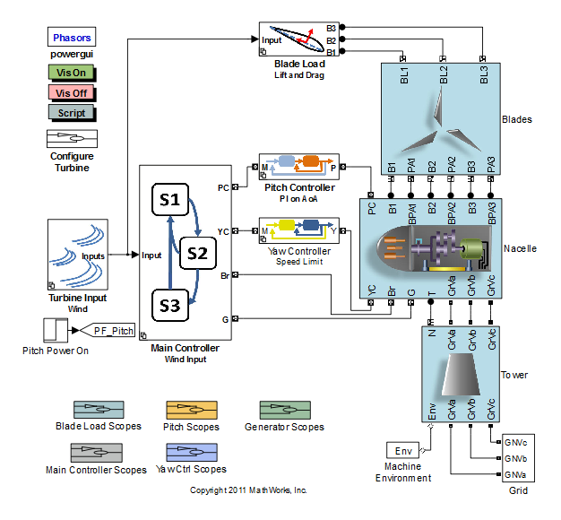
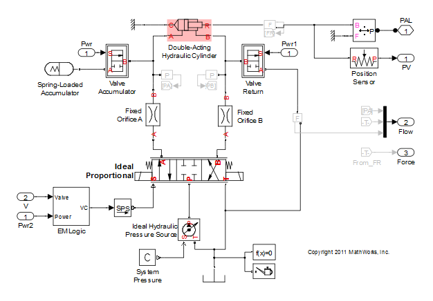
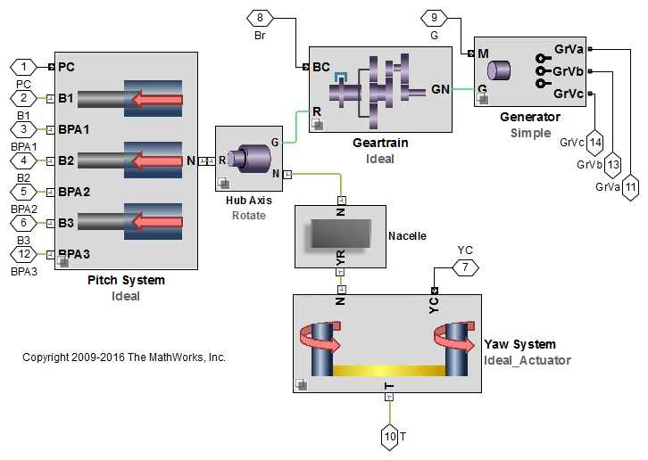
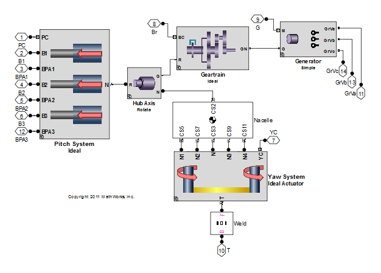

Generated by the Simulink Report Generator
14-Apr-2011 23:10:03
Table of Contents
List of Figures
- 2.1. Rotor Speed (RPM)
- 2.2. Wind
- 2.3. Nacelle Yaw
- 3.1. Rotor Speed (RPM)
- 3.2. Wind
- 3.3. Nacelle Yaw
Table of Contents
Select_Turbine_Systems('H_Pitch S_Yaw Ge Gn Lift_Drag', WT_Configs) open_system('Wind_Turbine');

open_system('Wind_Turbine/Nacelle/Pitch System/Hydraulic/Hydraulic/Actuator_1');

open_system('Wind_Turbine/Nacelle/Yaw System/Servomotor/Servomotor/Yaw Motor1/Servomotor');


% CONFIGURE TURBINE WT_Configuration = 'I_Pitch IA_Yaw Ge Lift_Drag'; Select_Turbine_Systems(WT_Configuration, WT_Configs);

% SAVE ELAPSED TIME WT_Results_RPT{end+1,1} = WT_Configuration; WT_Results_RPT{end,2} = Elapsed_Sim_Time; Simulation_Time = get_param(bdroot,'StopTime'); WT_Results_RPT{end,3} = 80; WT_Results_RPT{end,4} = str2num(Simulation_Time)/Elapsed_Sim_Time;

% SAVE ELAPSED TIME WT_Results_RPT{end+1,1} = WT_Configuration; WT_Results_RPT{end,2} = Elapsed_Sim_Time; Simulation_Time = get_param(bdroot,'StopTime'); WT_Results_RPT{end,3} = str2num(Simulation_Time); WT_Results_RPT{end,4} = str2num(Simulation_Time)/Elapsed_Sim_Time;